開発作業を進めるエージェント型CLI
リポジトリを読み、計画を立て、実装やテストを進めるための開発者向けワークフローです。ポイントは、いきなり変更するのではなく、作業計画を提示してレビューを挟む設計にあります。
Public Briefing / xAI Agent Workflow
この資料は、xAI関連のエージェント型ツールを「何が新しいのか」「誰に役立つのか」「どう使い分けるのか」という実務目線で整理した解説です。技術者だけでなく、プロダクト責任者、事業開発、管理部門の意思決定者が読める構成にしています。
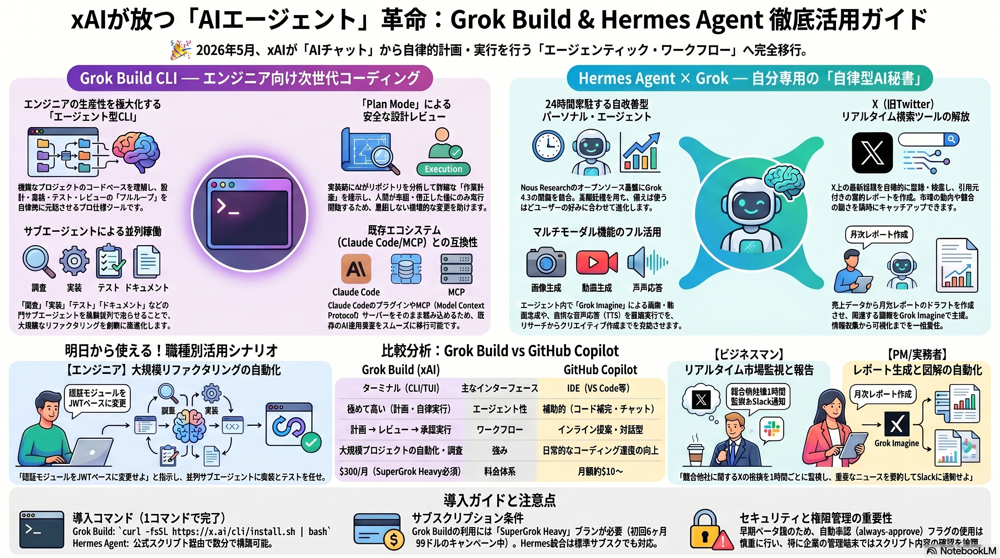
Grok Buildは開発作業を計画・分担・実行するためのエージェント型CLI、Hermes Agentは調査・監視・レポート作成を担う個人向けエージェントとして位置づけられます。どちらも「AIに聞く」体験から、「AIに任せる前提で作業を設計する」体験への移行を示しています。
見るべきポイントは、モデル性能そのものよりも、計画レビュー、権限管理、既存ツール連携、実行ログ、費用対効果です。業務に入れるなら、まず小さな作業範囲で検証するのが現実的です。
この図は、今回の話題を一枚で表しています。左側は開発作業を進めるGrok Build、右側は調査やレポートを担うHermes Agentです。両者に共通するのは、AIが単に答えるだけでなく、作業の流れに入り込む点です。
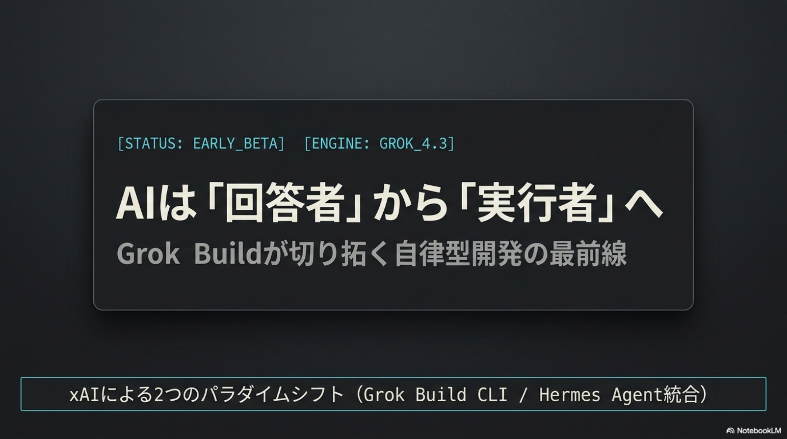
名前だけを見ると同じAIエージェントに見えますが、主戦場は異なります。Grok Buildは開発現場の自動化、Hermes Agentは情報収集と個人業務の継続支援が中心です。
リポジトリを読み、計画を立て、実装やテストを進めるための開発者向けワークフローです。ポイントは、いきなり変更するのではなく、作業計画を提示してレビューを挟む設計にあります。
X上の話題監視、資料作成、マルチモーダル生成など、情報を追い続ける作業を支援する位置づけです。市場監視やレポート作成のような反復業務に向きます。
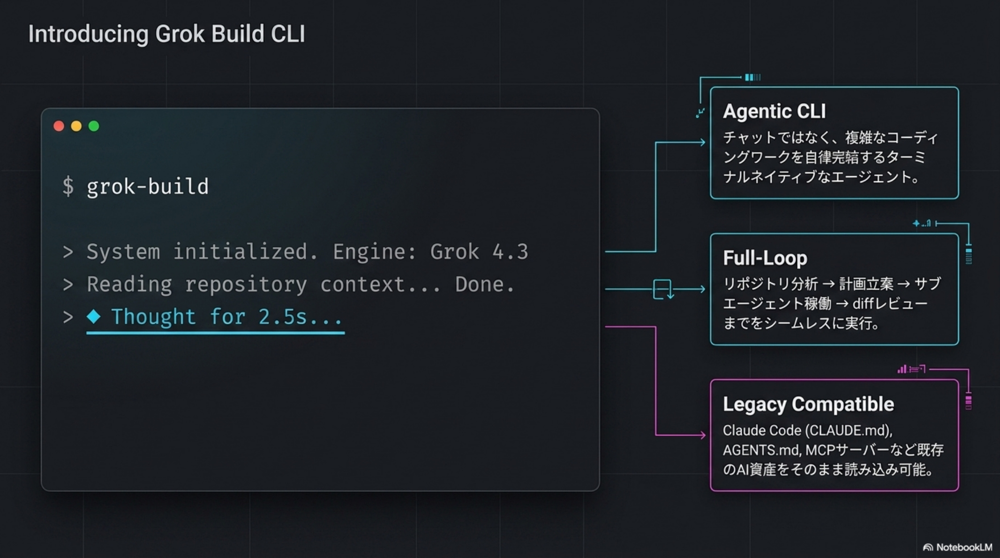
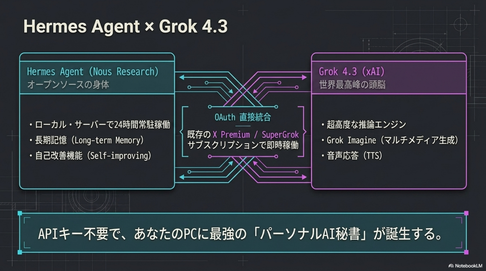
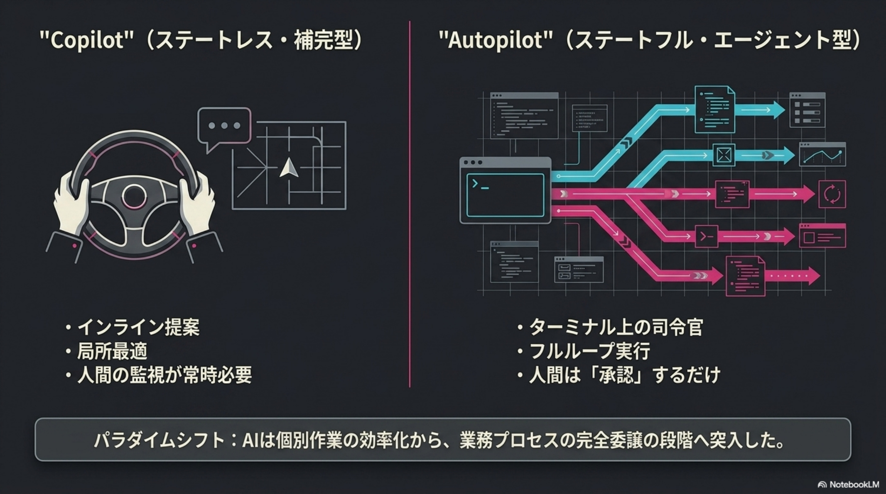
| 観点 | 従来のAI補助 | エージェント型ワークフロー |
|---|---|---|
| ユーザー体験 | 質問し、回答やコード補完を受け取る。 | 目的を伝え、計画、実行、検証、報告までを分担させる。 |
| 得意な作業 | 短い説明、コード断片、要約、アイデア出し。 | 複数工程の調査、実装、テスト、レポート化、継続監視。 |
| 人間の役割 | ほぼ全工程を人間が進め、AIは補助する。 | 人間は目的設定、レビュー、承認、最終判断に集中する。 |
| 導入リスク | 誤回答やコード品質のばらつき。 | 権限過多、誤実行、コスト増、監査ログ不足。 |
AIコーディングが次の段階に進む理由は、単なる補完では越えづらい壁があるからです。設計の文脈、長い作業の維持、複数工程の調整をAIに持たせることで、作業単位の自動化が現実味を帯びます。
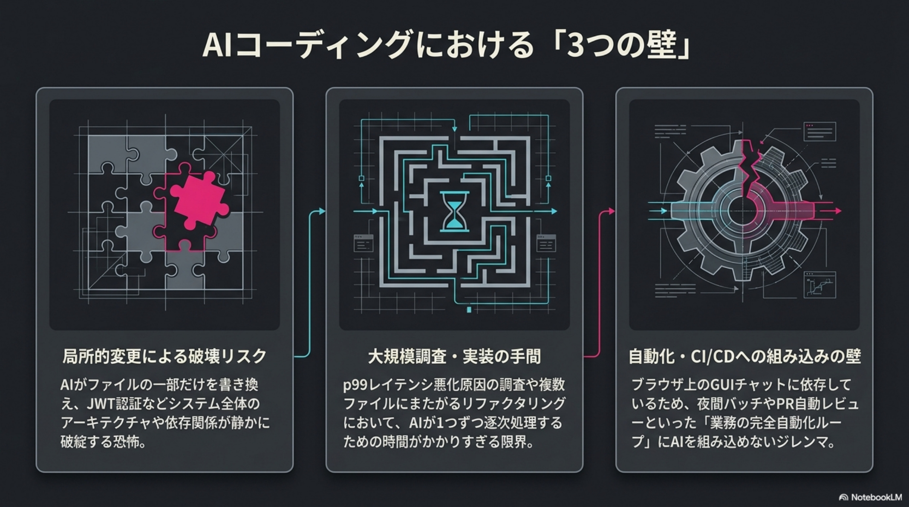
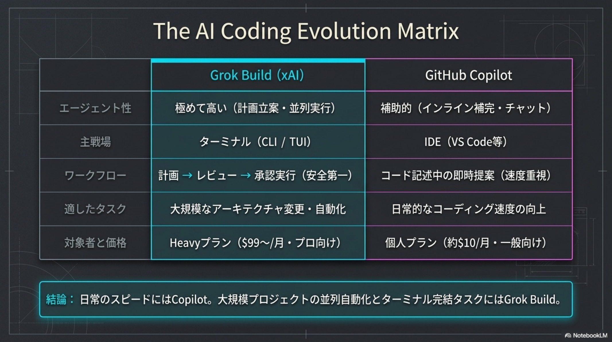
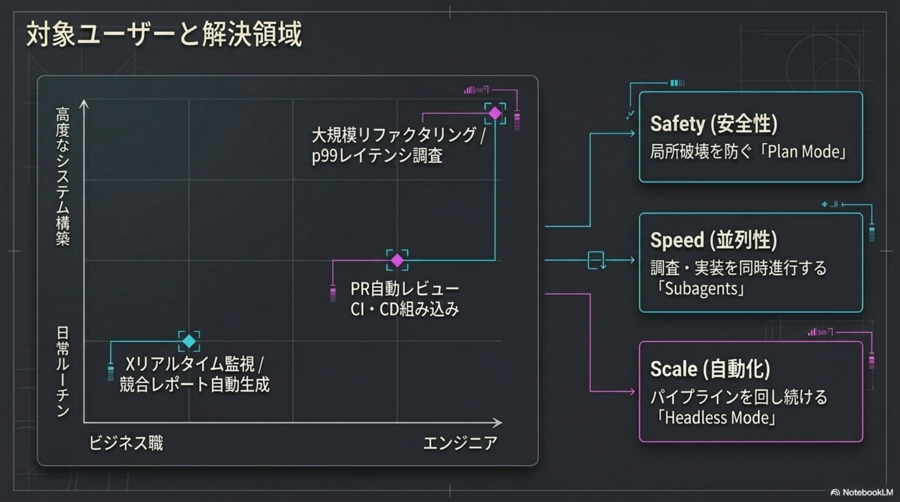
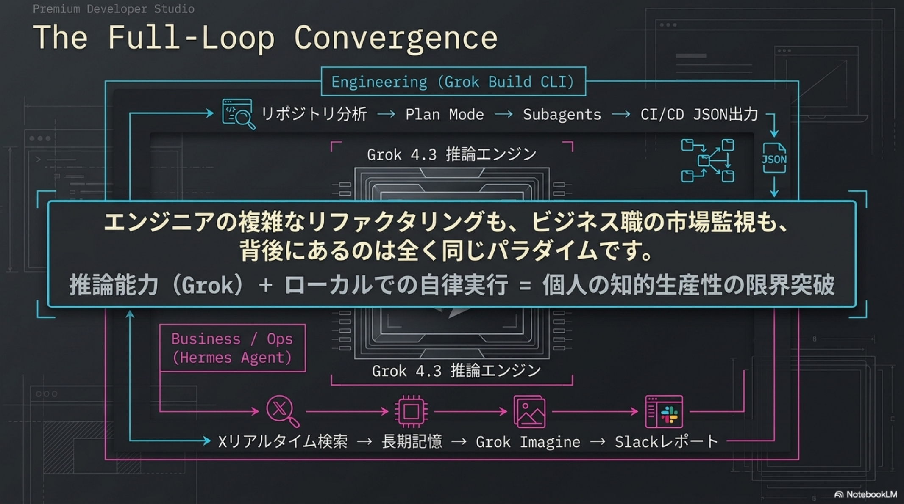
影響範囲の調査、変更計画、実装、テスト、差分レビューを分けて進める。人間は計画の妥当性と最終判断に集中できます。
Xや公開情報を追い、重要な動きだけを短く報告する。プロダクト会議前の下調べを減らす用途に向きます。
売上、問い合わせ、キャンペーン結果などを読み取り、ドラフトと確認ポイントを作る。反復的な資料作成の時間を短縮できます。
情報収集、要約、図解、画像や動画のたたき台作成までをつなぎ、企画からアウトプットまでの待ち時間を減らします。
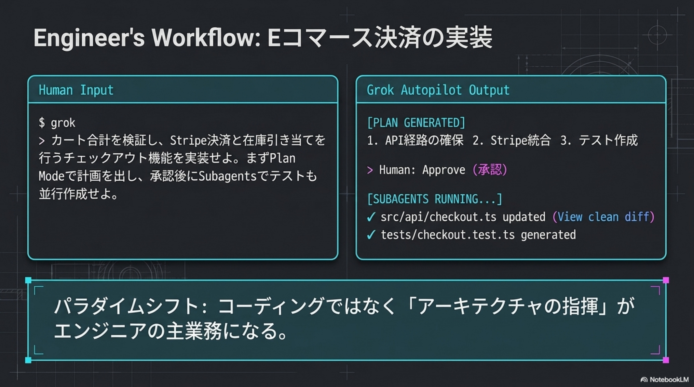
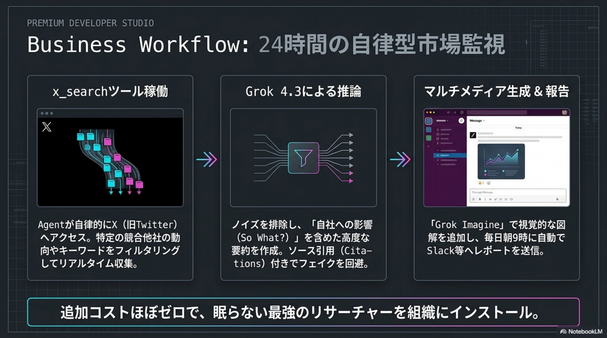
最初から本番業務を任せず、調査、テスト作成、社内資料の下書きなど低リスク領域から始めます。
コード変更、外部送信、費用発生、顧客データ参照の前には、人間の明示承認を置くべきです。
何を読み、何を判断し、何を変更したかを追える状態にします。監査できない自動化は運用に乗りません。
契約条件や必要プランは変わる可能性があります。公式情報を確認し、削減時間と月額費用を比較します。
Plan Modeは安全性、Subagentsは速度、Headless Modeは規模拡大に関係します。いきなり全部を使うのではなく、まず計画レビューを入れ、次に並列化、最後に自動実行範囲を広げる順番が現実的です。
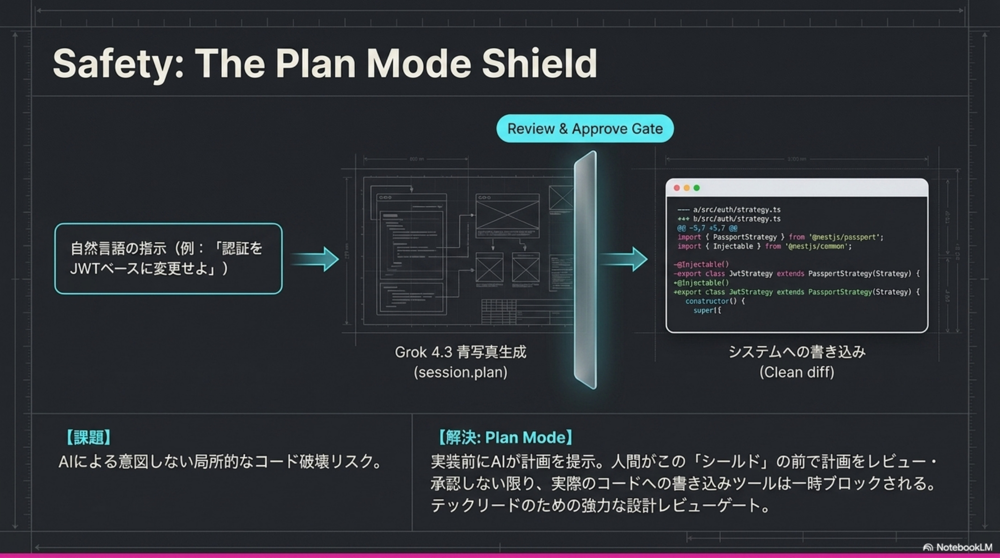
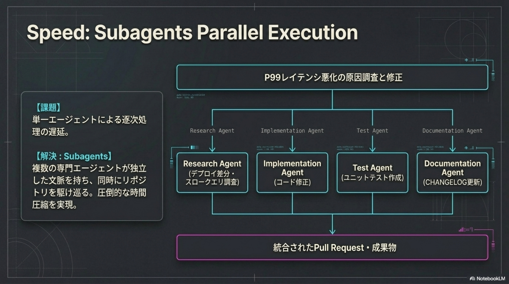
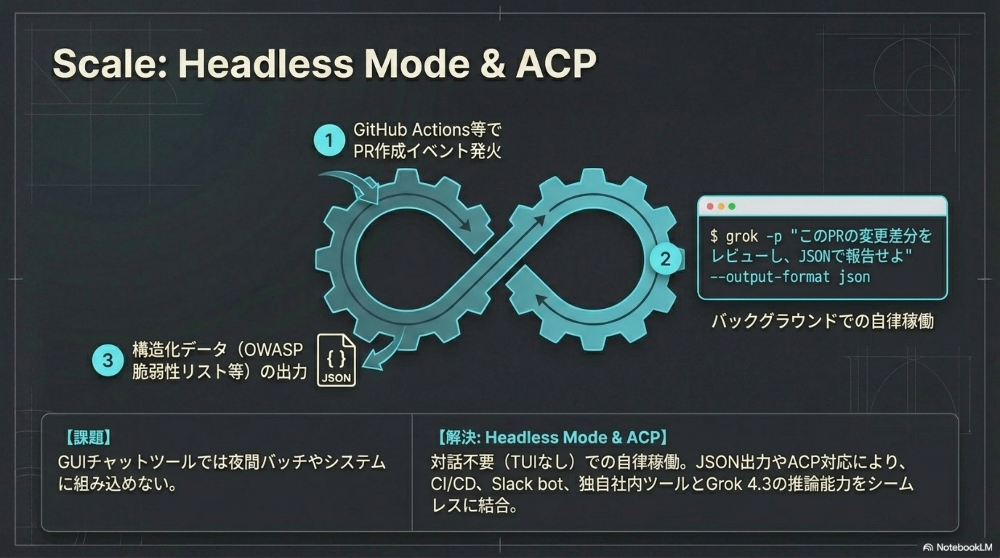
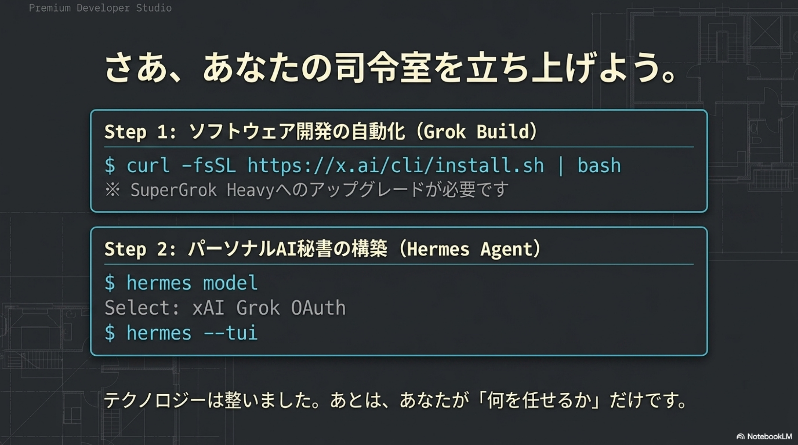
上の各セクションで使った図を含む、参考スライドの一覧です。本文中の説明と対応する図をもう一度確認したい場合に参照してください。
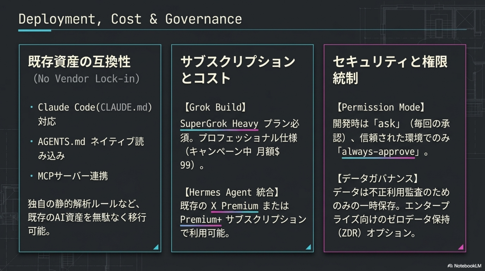